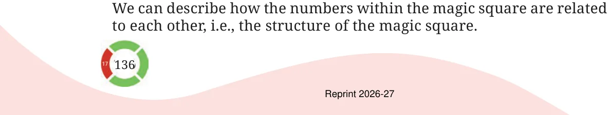
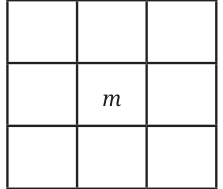
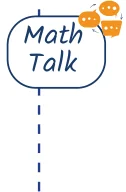

Choose any magic square that you have made so far using consecutive numbers. If m is the letter-number of the number in the centre, express how other numbers are related to m, how much more or less than m. [Hint: Remember, how we described \(a 2 \times 2\) grid of a calendar month in the Algebraic Expressions chapter].


Once the generalised form is obtained, share your observations with the class.